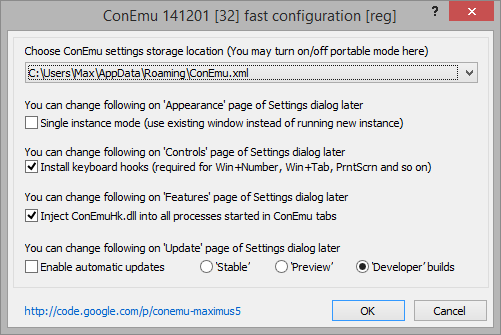

Настройка ConEmu
Если по прочтении нижеизложенного материала вопросы остаются - задавайте.
Про настройку ConEmu хочется сказать следующее
- ConEmu работает так, как хочется пользователю (то есть вам),
- Если это не так, значит в диалоге настроек есть флажок, который вы не включили ;)
- Конечно, может так случиться, что нужная вам опция еще никому не понадобилась, тогда вам сюда
Итак, при первом запуске программы вы, скорее всего, увидите диалог быстрой настройки:

Вы можете выбрать, что будете разрешать ConEmu, т.к. на некоторые функции (перехват клавиатуры, внедрение в процессы, доступ к интернету) могут ругаться антивирусные программы. ConEmu не содержит троянов или вирусов, код открыт, можете проверить. Тем не менее, вы можете отключить эти функции, хотя это и не рекомендуется.
Install keyboard hooks. Если флажок отключить, ConEmu не сможет обрабатывать некоторые клавиатурные комбинации. Например, в Windows 7 комбинации Win+цифра (Win+1, Win+2, т.д.) переключают/запускают программы на панели задач. А ведь ими удобно переключать табы в окне ConEmu. Включение флажка «Install keyboard hooks» означает не то, что ConEmu будет блокировать системные клавиатурные комбинации, а только то, что у вас есть возможность включить или отключить их перехват в диалоге настроек. Например, флажками «Host-key+Number», «Disable Win+Tab» и т.п. (вкладка «Keys» диалога настроек).
Inject ConEmuHk.dll into processes, started in ConEmu tabs. Для многих возможностей (обработку параметра "-new_console", работу графических приложений во вкладках ConEmu, ...) и избежания проблем (например, появление графических диалогов или меню под окном ConEmu, ...) требуется внедрение в запускаемые процессы библиотеки ConEmuHk.dll (или ConEmuHk64.dll для 64-битных приложений).
Enable automatic updates. Все очевидно, разрешить обновление программы из интернета. Потом, в диалоге настроек на вкладке «Update» можно будет настроить параметры обновления. ConEmu не «самовольничает», перед запуском процесса обновления у вас спросят подтверждение.
На момент написания этого текста еще нет «Stable» сборок ConEmu, в которых есть опция автоматического обновления. Поэтому пока, с точки зрения обновления, нет разницы между «Stable builds» и «Developer builds».
После нажатия кнопки «OK», ConEmu запускает в своей вкладке либо Far Manager (если найден), либо cmd.exe, либо ту программу (или программы), которые указаны в свойствах ярлыка или в настройке ConEmu.
Теперь можно открыть диалог настроек
- выбрав пункт «Settings...» из меню ConEmu (открыть меню можно щелкнув правой кнопкой мышки по заголовку окна или левой кнопкой мышки по иконке в заголовке окна, или нажав на клавиатуре Win+Alt+Space)
- или просто нажать на клавиатуре Win+Alt+P
Ссылки на документацию
- Параметры командной строки, запуск при старте нескольких вкладок
- Описание настройки (на английском)
- ЧаВо (на русском)
- Остальная документация
Скачать (Download)
Последнюю версию ConEmu-Maximus5 можно скачать здесь.
Документация на английском здесь.